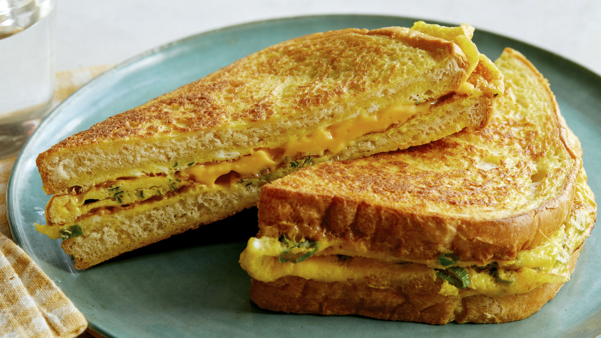

K's Chibom

Ghanaian Bread and Egg
This is one of my favourite things to make because it is low effort
and does not use up that many ingredients. Just toss up and fry up
and good to go!
Ingredients
- Koala/Shoprite Bread
- Large eggs
- Salt
- Chopped Tomatoes
- Chopped Onions
- Chopped Sausages
- Corned beef (Optional)
- Butter/oil
- Chopped Green Chilli
Steps
Follow this carefully to make the best bread and egg of your life!
Steps to make egg mixture
- Take a bowl add the chopped onion, chopped green chili, chopped tomatoes and chopped sausages.
- Add 1/4 spoon of salt and butter
- Break 3 eggs into the bowl, mix and whisk
Applying egg mixture and frying
- Take one bread slice spread the egg mixture at one side
- Heat a pan over a medium flame add a spoon of oil.
- Immediately place the egg coated bread slice on the pan.
- Spread the egg mixture on the other side of the bread.
- Flip on other side and fry for 2-3 minutes.
- Press with spatula and fry on both sides till it turns to golden colour.
- Take egg bread toast into the plate.
- Repeat the same process for rest of them.